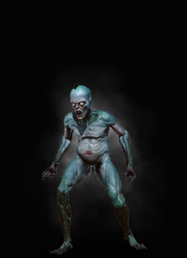

|  |
Bestiary Description:When at the water's edge, you gotta be quiet. First of all so as not to scare the fish. Second — so you don't attract drowners.
— Yanneck of Blaviken, fisherman
A drowner resembles a corpse dredged from the bottom of a pond. It is sickly blue or green in color, with slime and sludge oozing out of every pore and the acrid stench of rot wafting off if it. That is why it is often thought drowners – along with their more dangerous cousins: vodniks, mucknixers and drowned dead – arise from the bodies of those who drown in shallow water: lost travelers falling into bogs, children who swim too far from the shore or, in the case of vodniks, inebriated peasants who stumble off narrow swamp trails. |